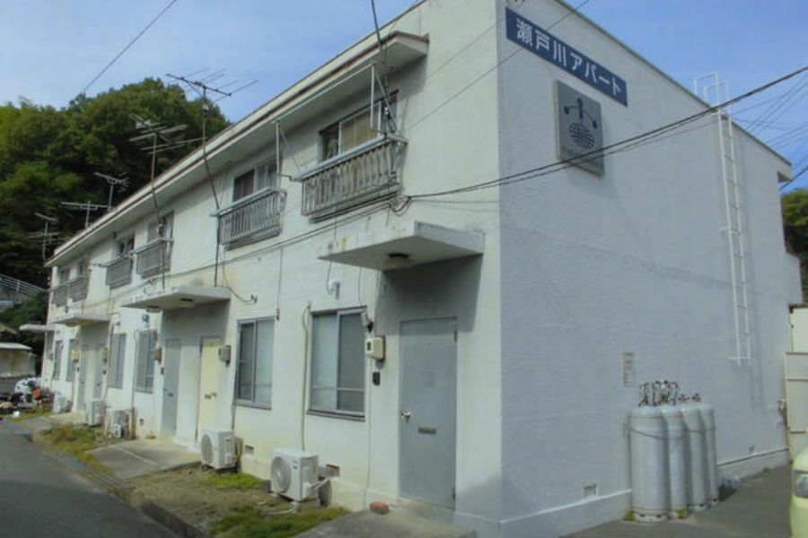
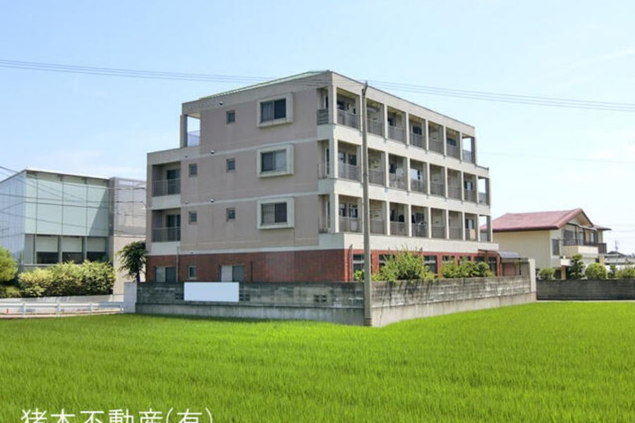
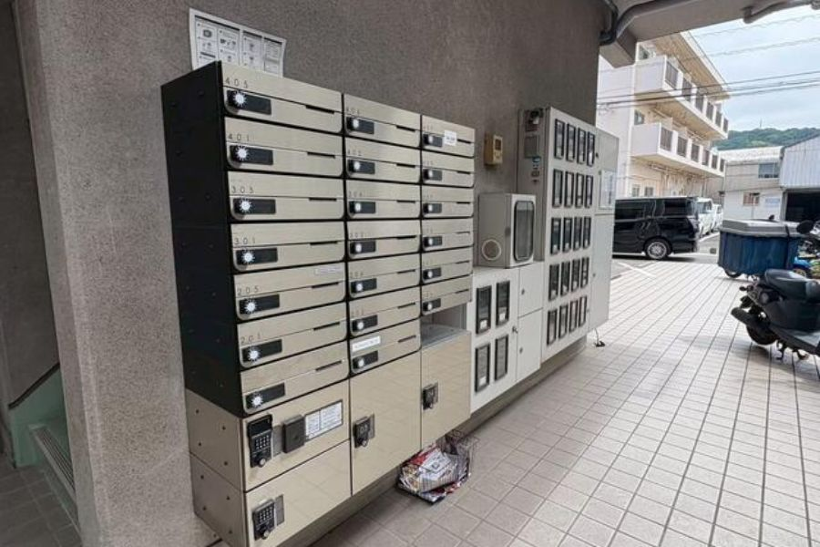
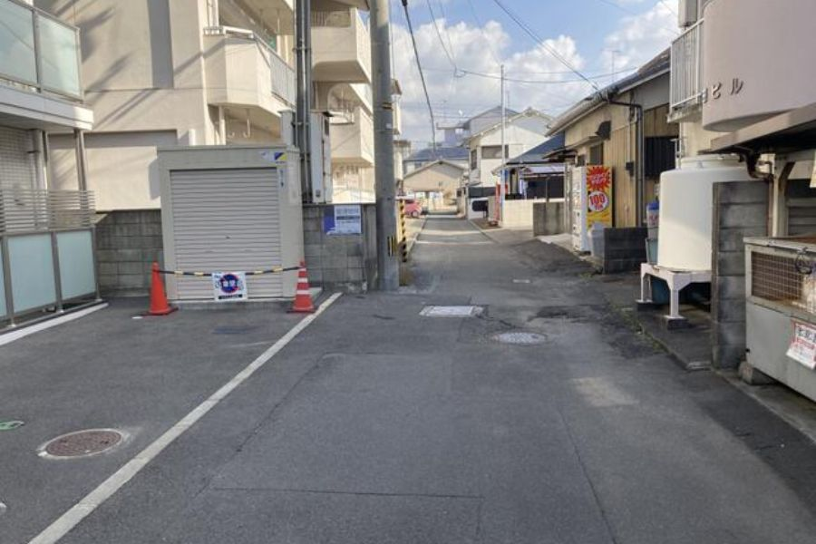
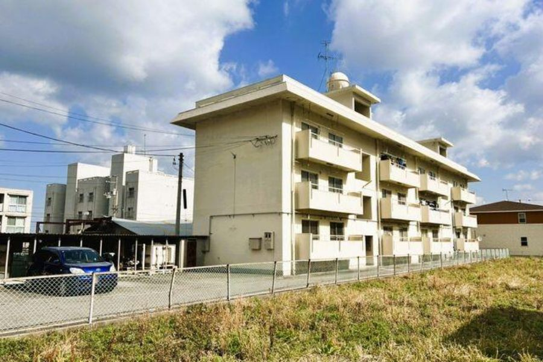

中国・四国 一棟収益物件情報
The Earth株式会社が毎朝チェックしている一棟収益物件の情報です。
2026年9月17日 更新枠A 条件合致物件 5件

長門市 一棟アパート
山口県長門市東深川2239-3／JR美祢線 長門市駅 徒歩16分 JR山陰本線 長門市駅 徒歩16分

マリンコート吉見
山口県下関市吉見新町二丁目15-21／JR山陰本線 吉見駅 徒歩10分

ホワイトハイツ
山口県宇部市大字東須恵918-59／JR小野田線 小野田港駅 徒歩22分

山口市 平成8年築 RC造一棟マンション
山口県山口市小郡本町2丁目874-1／JR山陽新幹線 新山口駅 徒歩18分 JR山口線 周防下郷駅 徒歩9分

シャトル昭和町
徳島県徳島市昭和町七丁目10-2／JR牟岐線 阿波富田駅 徒歩23分
枠B 実勢価格より安い物件 32件

山口県宇部市 一棟S造アパート
山口県宇部市西梶返2丁目20／JR宇部線 東新川駅 徒歩11分 JR宇部線 琴芝駅 徒歩15分

鳥取県米子市 一棟コンクリートブロ…
鳥取県米子市祇園町2丁目169-1／JR山陰本線 米子駅 徒歩18分

山口市 1棟AP
山口県山口市平井／JR山口線 湯田温泉駅 徒歩15分 JR山口線 矢原駅 徒歩26分

愛媛県今治市 一棟アパート
愛媛県今治市東村／JR予讃線 伊予富田駅 徒歩31分

シャトー津島
岡山県岡山市北区津島西坂二丁目3-51／JR吉備線 備前三門駅 徒歩15分

一棟売りアパート（全3棟）
広島県廿日市市宮内1丁目3番34号／JR山陽本線 宮内串戸駅 徒歩11分 広島電鉄宮島線 宮内駅 徒歩12分
徳島県 一棟売りアパート
徳島県板野郡藍住町奥野／JR高徳線 阿波川端駅 徒歩38分

ウエストコーポ＋貸家
山口県岩国市錦見7丁目2-25／JR岩徳線 西岩国駅 徒歩15分
岡山県倉敷市 一棟売りアパート
岡山県倉敷市玉島長尾／JR山陽新幹線 新倉敷駅 徒歩15分

愛媛県松山市 一棟売りアパート
愛媛県松山市高砂町1丁目／伊予鉄道環状線(JR松山駅経由) 清水町駅 徒歩3分 伊予鉄道環状線(JR松山駅経由) 高砂町駅 徒歩5分

高知県須崎市 一棟アパート
高知県須崎市下分甲／JR土讃線 土佐新荘駅 徒歩9分

メゾン・ドゥ・コリーヌＡ、Ｂ
岡山県岡山市中区海吉2226-1／JR赤穂線 大多羅駅 バス6分 徒歩15分（バス：福泊（岡山県）停留所）
レトロプラス宮脇町
香川県高松市宮脇町二丁目／JR高徳線 昭和町駅 徒歩11分

瀬戸川アパート
広島県尾道市吉浦町28-10／JR山陽本線 尾道駅 徒歩22分

愛媛県松山市 一棟売りマンション
愛媛県松山市樽味／伊予鉄道市駅線 道後公園駅 徒歩15分

岡山県岡山市中区 一棟売りマンション
岡山県岡山市中区東山／岡山電気軌道東山本線 門田屋敷駅 徒歩13分

モンテメール川内
徳島県徳島市川内町平石古田79番1／バス 川内中学前停留所 徒歩1分
広島市中区十日市町1丁目 一棟マンション
広島県広島市中区十日市町1丁目／広島電鉄2系統 本川町駅 徒歩3分 広島電鉄8系統 十日市町駅 徒歩4分
東和マンション
山口県周南市花陽／JR山陽本線 櫛ケ浜駅 徒歩48分 JR山陽本線 徳山駅 徒歩53分
徳島県徳島市 一棟売りマンション
徳島県徳島市中島田4丁目／JR徳島線 鮎喰駅 徒歩14分

東富田コーポ
徳島県徳島市かちどき橋3丁目56／JR牟岐線 阿波富田駅 徒歩6分 JR牟岐線 二軒屋駅 徒歩17分 JR鳴門線 徳島駅 徒歩24分

【平成5年 RC 満室想定10.32%】山越ハイム
愛媛県松山市山越2丁目9番23号／伊予鉄道環状線(JR松山駅経由) 本町六丁目駅 徒歩17分

藤ライフ
岡山県倉敷市倉敷市西富井1270-2／水島臨海鉄道 福井駅 徒歩11分 水島臨海鉄道 西富井駅 徒歩11分

愛媛県松山市 一棟
愛媛県松山市保免中2丁目5／JR予讃線 市坪駅 徒歩17分 伊予鉄道郡中線 土居田駅 徒歩17分 伊予鉄道郡中線 余戸駅 徒歩19分

広島県三次市 一棟RCマンション
広島県三次市南畑敷町／JR福塩線 三次駅 徒歩18分 JR芸備線 八次駅 徒歩18分

【グレース古江】 広島市西区古江東町 一棟マンション
広島県広島市西区古江東町／広島電鉄宮島線 高須駅 徒歩6分 JR山陽本線 西広島駅 徒歩21分

ルネサス清水町
愛媛県松山市清水町3丁目105-1／伊予鉄道環状線(JR松山駅経由) 高砂町駅 徒歩5分

岡山県倉敷市 一棟RCマンション 4棟一括
岡山県倉敷市児島唐琴2丁目3-23／JR瀬戸大橋線 児島駅 バス17分 徒歩5分（バス：下津井電鉄 82王子ヶ岳線 唐琴町停留所）

デュウオコート西平塚
広島県広島市中区西平塚町8番18号／広島電鉄1系統 銀山町駅 徒歩9分 広島電鉄5系統 松川町駅 徒歩10分 広島電鉄1系統 中電前駅 徒歩16分

マツダビル
広島県広島市南区向洋本町19-31／JR山陽本線 向洋駅 バス5分 徒歩2分（バス：向洋本町停留所）

愛媛県四国中央市 一棟RCマンション
愛媛県四国中央市中之庄町／JR予讃線 伊予三島駅 徒歩20分

徳島サンハイツ
徳島県小松島市徳島県小松島市中郷町字西野1-21／JR牟岐線 中田駅 徒歩3分
TEL 082-248-9393／FAX 082-248-9384
広島県知事（1）第11423号 公益社団法人 全日本不動産協会 会員